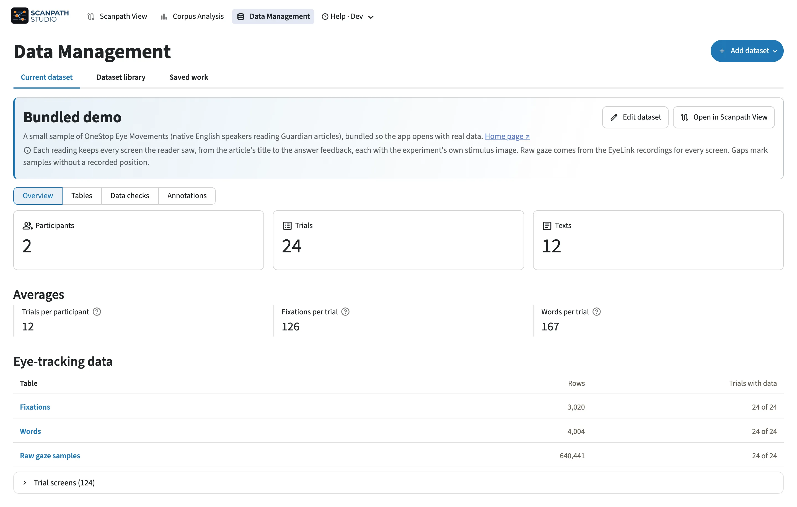

Data Management¶
Load your own data, open a public dataset, or try the bundled demo.

Choose a dataset¶
Pick a dataset in Select dataset above the plot or open Dataset library on the Data Management page.
- Bundled demo includes 24 readings by two L1 English readers of 12 OneStop texts. Each reading keeps every screen the reader saw: the article's title (first paragraph only), the question preview, the paragraph, the question, the answers and the feedback. Each screen shows the experiment's own stimulus image, placed where the experiment drew it. The 1,000 Hz EyeLink samples cover each screen from its onset to the response that ended it. Each sample keeps its timestamp, screen coordinates, pupil area in tracker units and tracked eye. During tracking loss the coordinates and the pupil area are blank.
- Hand-drawn sample: a scanpath drawn by hand over a short English text, which you can edit.
- Public datasets: OneStop and PoTeC. In the desktop app or a pip install, each downloads the first time you open it.
- + → Import files: your own tables.
- + → Draw a scanpath: write a text and place its fixations by hand.
Draw a scanpath¶
Choose + → Draw a scanpath, then type your passage. In Draw mode, click the words in reading order. Click a word twice for two visits, or click the space between words for a fixation without a target. For a regular sequence, Reset to one fixation per word places a 220 ms fixation on each word.
Use Select & move to drag a marker. The Fixation list lets you select visits that land on top of one another. Change Duration (ms) and use Play preview to check the timing. The Fixation table also accepts keyboard edits. Leaving both coordinates empty places the fixation at the center of its target word.
Save dataset opens the figure. To revise it, go to Data Management and click Edit drawing beside its name. Save changes updates the drawing, and Save as copy keeps a separate version. For another computer, download the editable draft from Share and open it with Load a saved draft in the drawing editor.
OneStop¶
The bundled demo comes from OneStop Eye Movements (Berzak et al., 2025), an English corpus with 360 participants. The full corpus is available as four public datasets: OneStop · Ordinary reading, OneStop · Information seeking, OneStop · Repeated reading and OneStop · Information seeking (repeated). Each downloads once from OSF.
What your data needs¶
Start with a Fixations, Words or Raw gaze table. You can add the other tables whenever you need them.
To try a right-to-left passage, import the bundled
sample_data/mixed_script_words.csv and sample_data/mixed_script_fixations.csv.
The two synthetic lines combine Hebrew, Arabic, English, digits and punctuation.
Use an 800 × 250 px canvas to see the recorded layout. The tenth fixation revisits
the Arabic word on the second line.
| Table | Contents |
|---|---|
| Fixations | One row per fixation: trial ID, duration, and x/y or a word ID |
| Words (interest areas) | One row per word: trial ID, word ID and word box |
| Raw gaze | One row per gaze sample: trial ID, x and y |
| Participants | One row per participant, with metadata |
| Trials | One row per trial, with metadata |
| Texts | One row per text, with metadata |
The app recognizes column names from common eye-tracker exports. Check the mapping when you import. To keep condition labels and other columns, pick them under Extra fields to keep. You can filter, sort and group trials by any metadata field.
Files and units¶
- CSV, TSV, TXT, Parquet, Feather, Excel, or a ZIP of these files
- Positions in pixels
- Times in milliseconds. A time column whose header names its unit, such as
[s],[μs]or[ns], is converted. - Word boxes as
x/y/width/heightor EyeLink'sIA_LEFT/RIGHT/TOP/BOTTOM - Word IDs as numbers, or as text such as
w1. Text IDs must match exactly in the Fixations and Words tables. With text IDs, the order of the rows in the Words table sets the word order. - Several files for one table, such as one file per trial, are stacked into
one table, with each file's name in a
source_filecolumn. When an ID is only in the file name, use Derive columns from text to extract it into a column you can map. When you click Apply, a derived column named like an ID, such asparticipant,trialorstimulus, fills that ID field if it is empty. - Trial and Text IDs are matched exactly, so spell them the same way in both tables, including upper and lower case. The import screen says when they differ only in case.
- Words tables with one box per character, as in Chinese or Japanese: turn on Merge character boxes into word boxes. The import screen suggests it when a word's rows are at different positions.
Trials over several screens¶
Map the Screen ID field in your tables. A column named screen_index sets
the order of the screens. Without one, the screens are ordered by where they
first appear, using the Fixations table if available. The app draws one
screen at a time.
Reading measures¶
Corpus Analysis uses the per-word reading measures in your Words table, such as
first fixation duration or total fixation duration. Map them when you import.
EyeLink's IA_* columns are detected.
Add your own data¶
For a walkthrough inside the import wizard, choose Setup help → Show setup guide.
- Choose + → Import files and name the dataset.
- Upload your tables and check the column mapping.
- Under Recording setup, enter the Screen, Monitor width and Text size if you know them.
- Optionally, in the desktop app or a local install, attach the stimulus images from a folder.
- Click Add dataset, then Open in Scanpath View to see its first trial. You can also open the figure from Data Management → Current dataset.
To import similar files again, click Download setup file before Add dataset. Next time, choose Start from → A setup file and upload your tables: the column mapping, derived columns, character-box merge and recording setup are filled in.
Load and inspect in code¶
Load the same files in a script. The loaders detect column names the same way the app does.
Python and CLI
For raw gaze, metadata and explicit column mappings, see the loaders and CLI input options.
Add a dataset from a script¶
On your own computer, a script can add a dataset to the app's list. Use it to prepare the tables in code and then look at them in the app. Start the app afterwards and it opens on the new dataset. If the app is already open, reload its browser tab right away: changes you make in it before the reload are not saved.
The tables load as load_scanpath_data loads them, and the dataset is saved
with your other saved work. Adding again under the same
name is an error unless you pass replace=True (--replace). That swaps the
tables and keeps the dataset's annotations, metadata tables, share links,
description and recording setup, unless you give a new description or screen.
Without a screen size, the app uses one the data records, or estimates one from
the extent of the data. To set it later, use Edit dataset.
See add_dataset for every option.
To open the app on one reading of it, with the figure you want, write a link.
It names the dataset, the participant and trial, and the figure in
plot_scanpath's options or render's flags. From the CLI, open opens it in
your browser, and starts the app first if it isn't running.
The link is the one Share → Link writes for that view, so
settings it leaves out keep the values the app has. See
app_link and open.
To take a dataset off the list again, use
remove_dataset or
scanpath-studio remove "Pilot 3". Any dataset you added can be removed this
way, with its annotations and metadata tables, as its Remove on the Data
Management page does.
Annotations from a script¶
A script can also read and write the favorites, tags and notes on a dataset you added. A quality-control script can tag the readings it flags, and reviewers find them in the app with the tag filter. An analysis can read back what the reviewers marked.
import pandas as pd
import scanpath_studio as sps
flags = pd.DataFrame(
{"participant_id": ["p01", "p02"], "trial_id": ["3", "7"], "tags": "Short"}
)
result = sps.write_annotations("Pilot 3", flags)
print(result.unknown) # readings the dataset does not have, left out
marked = sps.read_annotations("Pilot 3")
excluded = marked[marked["tags"].map(lambda tags: "To exclude" in tags)]
The table has one row per reading: participant_id, trial_id, screen_id
for one screen of a trial recorded over several, and any of favorite, tags
and note. In a CSV file, separate tags with ;. The app's exported
annotations.json works too. Writing adds a reading's tags to the ones it
has, and a favorite or note you give replaces its own. Pass mode="replace"
(--replace) to make the dataset's annotations exactly the ones given; it is
refused when none of the given readings is in the dataset. A
reading the dataset does not have is left out and listed. An app already open
shows the new annotations once its browser tab is reloaded. See
write_annotations for every option.
Manage datasets¶
Current dataset opens on Overview. It shows how many participants, trials and texts are in your selection and the average number of trials per participant. Fixation and word averages count trials that contain those rows. Eye-tracking data shows the row and trial counts for each table. Scanpath trial filters apply to these counts.
Click a table name to jump to its rows. Tables shows fixations, words, raw gaze samples, participants, trials and texts on one page. When you attach a participant, trial or text metadata file, that table shows the complete file.
Data checks looks for unusable values in the whole dataset, including trials outside the filters. Annotations lets you review, import and export the dataset’s favorites, tags and notes. A script can read and write them too; see Annotations from a script.
To switch datasets, open Dataset library. Search by name or filter by source, then click a dataset to open its overview. Saved work shows what will reopen next time. On a local install, Dataset downloads lists the public datasets on disk and lets you choose where future downloads go.
Use Edit dataset to change its name, column mapping, recording setup or metadata, then click Save changes. Download setup file saves the mapping, recording setup and character-box merge, so you can apply them to similar data.
The editor offers only the columns kept when the dataset was added. To use a column that isn't listed, remove the dataset and add it again from its files, mapping the column or keeping it under Extra fields to keep.
Under Data checks, Compare with planned trials (optional) accepts a
CSV with participant_id and trial_id. Add screen_id to check an
individual screen. Enter a reason in planned_omission for readings you
intended to omit and leave it blank for the rest. The report distinguishes
missing readings, unscheduled recordings, and readings with raw gaze alone.
Review affected readings shows all the rows behind a finding, one reading
at a time, while your trial filters stay in place.
Excel imports use the first worksheet and show its name. ID columns preserve
literal labels such as 01 and NA. Leave a cell empty for a missing ID.
On restoring a pilot setup, the wizard names files whose headers or time
units differ from the saved mapping.
Under Name → Dataset citation, an upload can carry its title, authors or lab, version, DOI, and preferred credit. An unpublished study can supply just its preferred wording. Reopen Edit dataset to revise the credit. Cite and the export bundle include these references alongside the software citation.